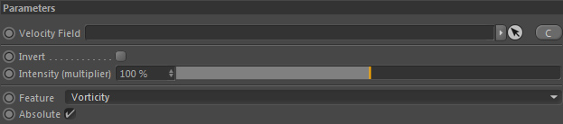

Parameters
Parameters

Velocity Field
Drop a fluid/liquid dynamics (which contain a velocity field) in here to analyze the rotational flow features from.
Feature
The type of rotational flow feature to measure.
1. Vorticity - is the tendency of a fluid element to self-rotate (vortex). It's the rotation of a velocity (turbulence).
2. Helicity - is more a topological measure of how vorticity is distributed in a local region. It changes sign (i.e. positive to negative value) depending on rotational direction.
For example the GF::Swirling and GF::Particle Turbulence use helicity ('Spatial adaption') in order to improve the turbulence generation.
Absolute
Define if only positive results should be returned by the constraint.